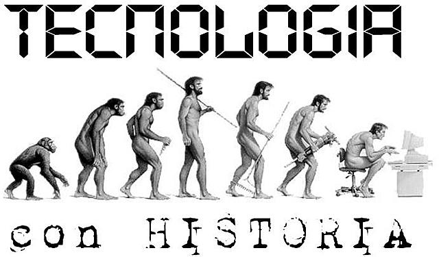

Esta pagina podrá encontrar diversas información relacionada a la tecnología, sus épocas, como ha ido evolucionado desde sus inicios hasta el día de hoy. También encontrará información respecto a diversos temas sobre el hardware y software, funciones, conceptos y entre otros.